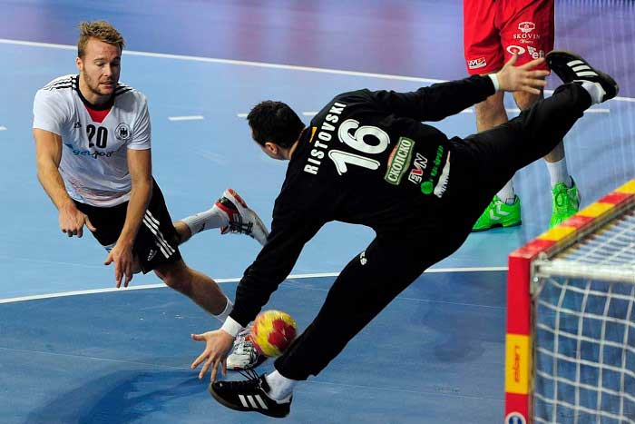

Hentbol oynandığı ilk yıllarda 11 kişiden oluşan takımlar halinde oynanırdı. Ancak günümüzde oynanan hentbol oyununda takım oyuncularının sayısı 7'ye indirilmiştir. Hentbol çim sahalar yerine günümüzde spor salonlarından oynanan bir spor faaliyeti haline dönüşmüştür. Hentbol oyununda esas amaç, rakip takımın kalesine gol atmaktır. Hentbol oyunun en temel hareketlerinden biri de topu elle atmaktır.
Elle oynanan bir oyun olan Hentbolda, oyuncuların topa ayak ve dizleriyle müdahalede bulunmaları yasaktır. Hentbolda bu müdahaleyi yapma hakkı yalnızca kaleciye aittir.
Hentbol oyunundaki en temel kurallardan biri oyuncunun topu elle karşı takımın kalesine atmaya çalışmasıdır. Hentbol oyununda topun dizin altındaki bölgeye temas etmesi yasak sayılan durumlardandır. Böyle bir durum olması halinde ise oyuncu 2 dakikalık bir süre boyunca oyun dışı kalır. Hentbol oyunu esnasında oyuncunun topu elinde gereğinden fazla süre boyunca elinde tutması yasaktır. Bir Hentbol oyuncusunun topu elinde en çok 3 saniye süreyle tutma koşuluyla 3 adım attıktan sonra, topu elinden atmış olması gerekir. Hentbol oyunu bir takım oyunudur. Bundan dolayı oyuncular arasında iletişim kurulması, istenen başarının elde edilmesine sebep olan en önemli kurallardan biridir. Erkek oyuncuların oynadığı Hentbol takımlarında her devre 30 dakika oynanır. Ancak bu durum kadınlardan oluşan Hentbol takımlarında 25 dakika sürmektedir. Bu oyunda takımların oyun süresi boyunca diledikleri kadar oyuncu değiştirme olanağı vardır.
Hentbol oyunun oynandığı sahanın belirli bir ölçü standardı bulunmaktadır. Buna göre Uluslararası hentbol saha ölçüleri şu şekildedir; Hentbol sahasının uzun kenar uzunluğu 40 metredir. Sahanın kısa olan kenar uzunluğu ise 20 metredir. Sahanın uzun olan kenarları, kenar çizgilerini oluşturur. Kısa olan kenarları ise sahanın kale çizgilerini meydana getirir. Hentbol sahası, kale sahasına paralel şekilde uzanan bir orta çizgiyle ikiye bölünür. Bu doğrultuda bir hentbol sahası; iki kale sahası ve bir oyun sahasından oluşur. Hentbol Kalesinin, üzerinde bulunduğu kale çizgisinin tam ortasına yerleştirilmiş bir şekilde olmalıdır. Kalenin yüksekliği 2 metre ve genişliği ise 3 metre ölçüye sahip olmalıdır. Hentbol oyun sahası içerisinde bulunan kalenin üstünde şeritler bulunur. Kalenin üst direği ile yan direğin birleştiği alandaki şeritler aynı renkte bitişik olmakla birlikte her ikisi de 28 cm. uzunluğa sahiptir. Diğer şeritler ise 20 cm. uzunluğa sahiptir. Hentbol oyun kaleleri topun geriye dönmesini önleyecek biçimde ağ ile donatılır.